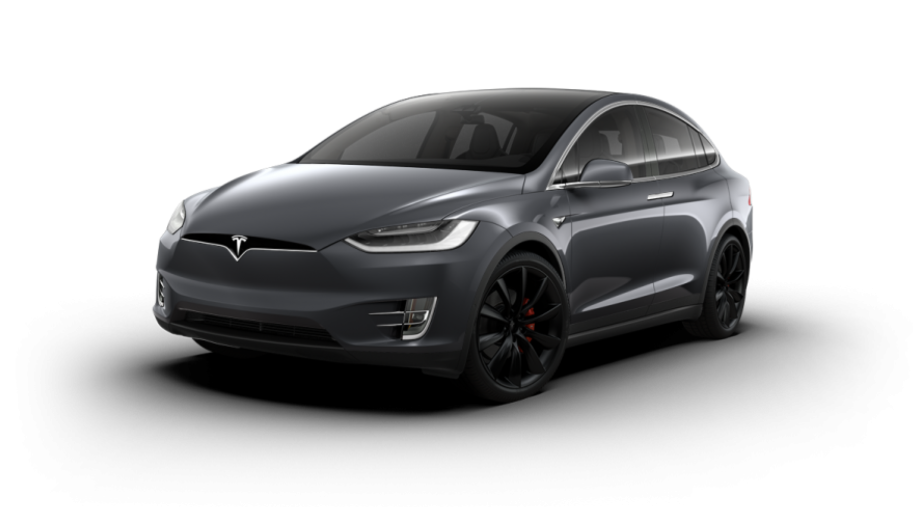

Tesla model X
Tesla X to wyjątkowy pojazd, łączący innowacyjną technologię z luksusowym designem. Od momentu, gdy wchodzi się do wnętrza, można poczuć, że to coś więcej niż zwykłe auto - to prawdziwa odyseja w przyszłość motoryzacji. Z wspaniałym połączeniem przestronności, elegancji i oszałamiającej wydajności, Tesla X zapewnia niezapomniane wrażenia z jazdy każdemu, kto ma okazję usiąść za kierownicą.
Opis samochodu
Silnik: Elektryczny, dostępne różne warianty, zależne od konfiguracji - od pojedynczego silnika z napędem na jedną oś do podwójnego silnika z napędem na wszystkie koła (AWD). Wygląd: Tesla Model X wyróżnia się awangardowym designem, z charakterystycznymi "skrzydłowymi" drzwiami z tyłu, które nadają mu futurystyczny wygląd. Posiada aerodynamiczną sylwetkę i płynne, eleganckie linie, które nie tylko wyglądają świetnie, ale także poprawiają osiągi i efektywność energetyczną. Wyposażenie: W zależności od wersji i opcji dodatkowych, Tesla X może być wyposażona w zaawansowane systemy bezpieczeństwa i asysty kierowcy, panoramiczny dach szklany, system nagłośnienia o niespotykanej jakości dźwięku, czy też zaawansowane funkcje związane z autopilotażem i autonomią jazdy. Dodatkowo, Tesla X oferuje ogromną przestrzeń bagażową, komfortowe wnętrze z luksusowymi materiałami i innowacyjny system informacyjno-rozrywkowy.
Galeria zdjęć
Dane techniczne
| Parametr | Wartość |
|---|---|
| Marka | TESLA |
| Model | X |
| Rok produkcji | 2015-teraz |
| Silnik | elektryczny |